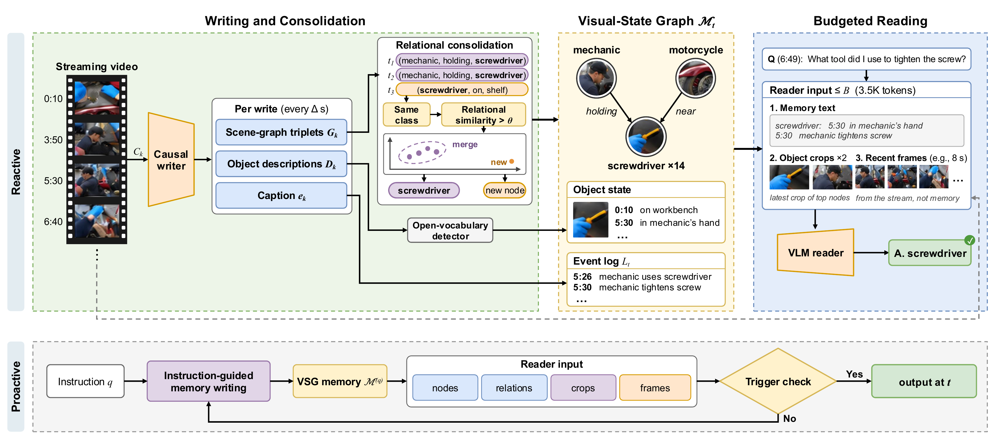

In streaming video understanding, the evidence needed to answer a question may have already left the recent-frame window. Keeping all frames does not scale with video length, while dropping older frames limits the model's ability to reason about the past. We propose Visual-State Graph (VSG), a training-free memory that stores the state of a stream rather than the raw sequence of frames. VSG represents the stream as a graph of objects and their relations, together with a log of events, similar to a dynamically evolving scene graph. An object observed repeatedly is represented by one persistent node, with a timestamped history of how its state changes. To determine whether a newly mentioned object already exists in the graph, we compare the relations it takes part in with those of stored objects. We build this memory as the video arrives, before the questions are known. When a question arrives, we retrieve relevant objects and events alongside recent frames under a fixed input budget. Our evaluation spans four streaming-video benchmarks and seven open-source vision-language models ranging from 7B to 32B parameters. Under matched input budgets, VSG improves reasoning about the past while preserving real-time understanding.

A mention is represented by the relations it takes part in. It is matched only against stored nodes of the same label class, and merged when the relational similarity exceeds \(\theta = 0.55\).
Memory text is placed first, object crops second, and the remaining tokens go to frames. Try it with the reference budget \(B = 3{,}510\) (a frame costs about 195 tokens, a crop about 216).
The memory is written once per video and can be read by any number of questions and readers. Both models are frozen.
# install git clone https://github.com/ailarmhz/VSG.git cd VSG && pip install -r requirements.txt # write the memory (no question) python scripts/write_memory.py \ --video clip.mp4 --out memory/clip # answer at T = 409 s, B = 3,510 tokens python scripts/answer.py --video clip.mp4 \ --memory memory/clip --time 409 \ --question "What tool did I use to tighten the screw?" \ --options "A. screwdriver" "B. hammer" \ "C. pliers" "D. wrench"
vsg/ memory.py graph, consolidation, write log writer.py question-agnostic writer reader.py retrieval and budgeted reading proactive.py instruction-guided memory, trigger grounding.py OWLv2 boxes and crops prompts.py writer and reader prompts labels.py label classes scripts/ write_memory.py answer.py
@inproceedings{vsg2027,
title = {Visual-State Graph Memory for Streaming Video Understanding},
author = {Anonymous},
booktitle = {Under review},
year = {2027}
}